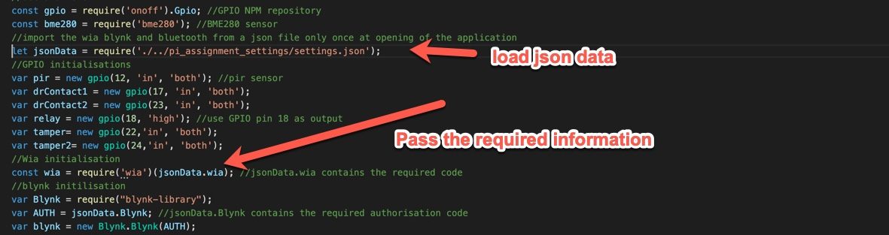
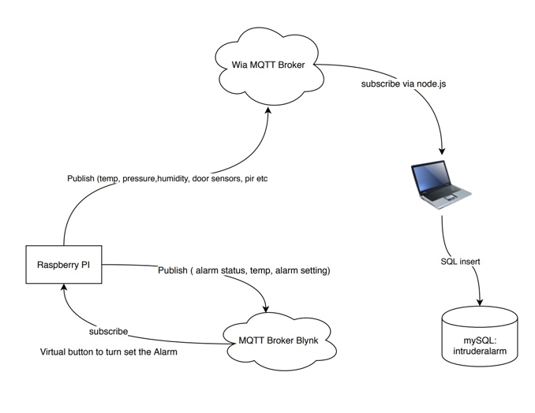

Development
Development of the Intruder alarm application on the Raspberry pi was completed using node.js
Initially I found this to be difficult to find example coding and syntax from the web but as I've gone through the programming of the device and application, I have found may resources and
most of the NPM information does hold examples. Mainly it was a case of knowing where to look.
Using the async nature of node it was useful in programming the i/o elements of the setup. The BME280 sensor uses the I2C interface on the raspberry pi.
And with a single thread operation it was possible to request the data from this every 60 seconds and whilst waiting for this result the program could go off completing other tasks.
Most of the devices in this application were realised using the GPIO pins on the raspberry pi. The NPM resource used for this was ONOFF available from:
ONOFF Storage of the images and videos is into a S3 bucket from Amazon Web Services. This was setup and the files are sent directly from the raspberrypi node.js application rather than using Wia The NPM package for the S3 integration used is available from: S3 As its important not to share keys for various platforms including AWS, Blynk and Wia. I placed these in a json file outside of my git repository. See an example of the json file The coding then to access these values in the node.js file are the following:

For this I used a NPM package called local network scanner available from The results are passed back to wia via MQTT and then into the mySQL database for storage. This would be an area for further development to work with this data Storing the information from the program e.g. alarm status, image location etc was realised using a MQTT subscriber from my laptop and then a connection was made to a SQL database and the data was sorted into the required tables.
A node.js application was ran to achieve this with a subscription to wia. The workflow for getting the data to the mySQL server is below

Asynchronous
GPIO
s3 storage
settings in a json file
arp scanner
mySQL
Full listing of code
For a full listing of the code for the Intruder alarm, please go to my git hub page: IOT application